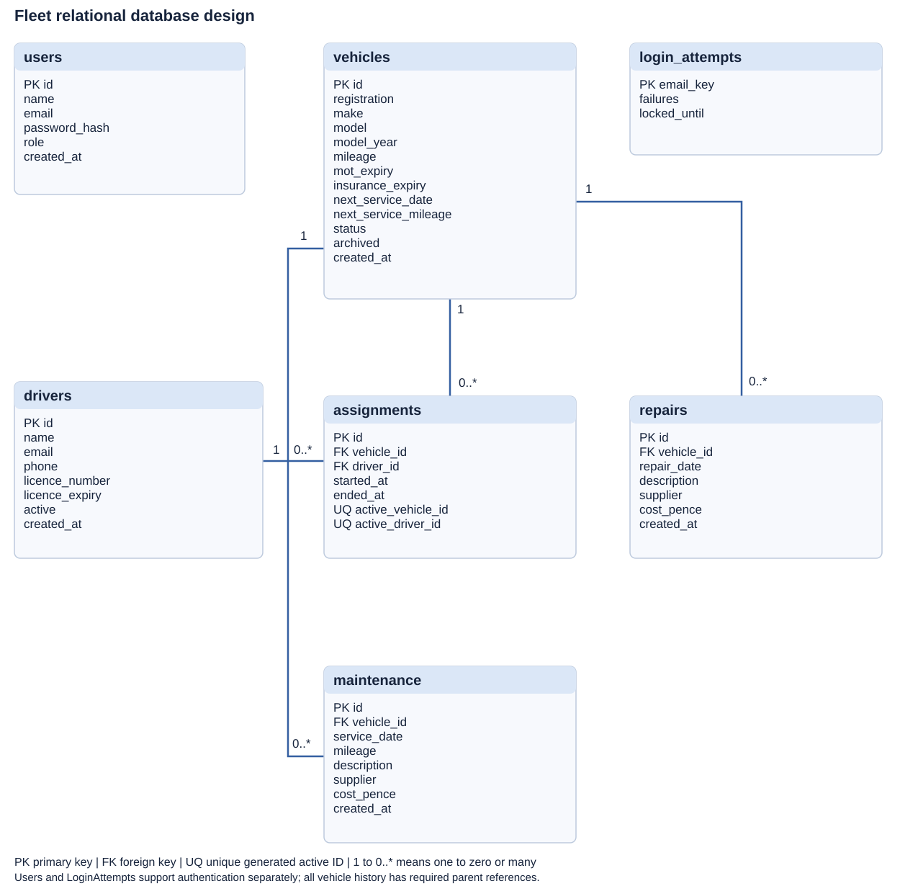

Fleet Desk
Vehicle Fleet Maintenance and Compliance System for a fictional small business. A local PHP/MySQL mini project focused on relational design, validation and testing.
Business problem
Organise vehicle information, driver allocation, service records, repair costs and manually entered expiry dates in one small application.
Technical scope
PHP, PDO, MySQL or MariaDB, HTML and local CSS. Administrator login, retained assignment history, warning rules and exact integer-pence cost reporting.
Design and planning
- Requirements and project plan
- Architecture and technical decisions
- Data dictionary
- Entity relationship diagram
- User guide
- Fleet administrator security campaign


Verification evidence
70 validation and repository checks passed, together with 26 simulated HTTP checks, using PHP 8.3.33 WebAssembly and SQLite.
Automated results · HTTP simulation results
MySQL deployment, Apache restrictions, multi-session concurrency and genuine browser usability still require checks in the target environment. The target environment test plan records their status separately.
Run the application
This page presents the project. Install the PHP application and MySQL database locally using the README. GitHub Pages does not execute the PHP/MySQL system.
Manual dates and licence formats are not verified against DVLA or insurers. This learning prototype is not a certified compliance service.